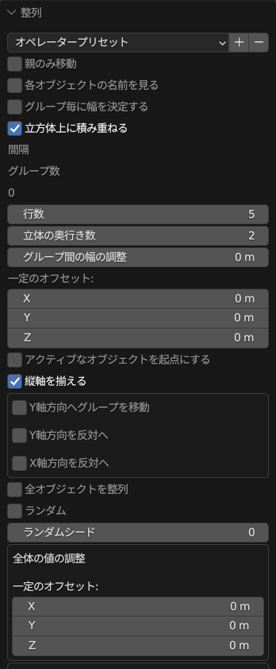
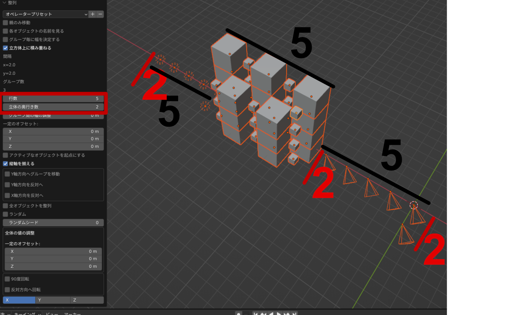
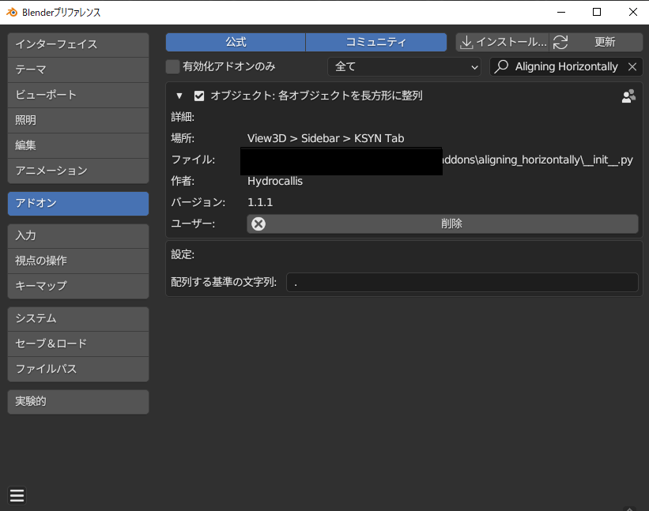

AHの様々な機能

インターフェース
このアドオンはオブジェクト郡のY軸とX軸を基準にオブジェクト郡が等間隔で配列されるアドオンです。
簡単に解説すると、指定した行と列分でオブジェクトが並び、 それ移行は積み上がります。
使用用途して、樽の積み重ね。窓の配列など、 オブジェクトをアレイモディファイアなどを使わずに 等間隔で配列したい際に有効なアドオンとなっております。
ぜひ活用して下さい。
全体のオブジェクトを配列
全体のオブジェクトを配列するチェックボタンを押すと、 通常であればグループ毎の（例えば、cube.001 cube.002 とplane.001 plane.002などのグループ）配列が 統合されて配列されます。
平面配列
デフォルトでは立体的にオブジェクトが積み上がりますが、 このボタンをクリックすると平面上にオブジェクトが配列されます。
グループ配列
デフォルトの設定ではオブジェクト名のグループ毎に配列されます。 （例えば、cube.001 cube.002 とplane.001 plane.002などのグループ）
配列の幅の基準がオブジェクト郡のX軸とY軸の幅の最大値から算出されます。
カメラやライトは幅という概念がないので、０ｍとして算出されます。
デフォルに戻すには
プロパティの設定をすべて戻したい場合はオペレータープリセットからデフォルトを選んでください。
オペレータープリセットのオプションを用意してますので、 お好みの設定があれば設定の保存もここで行えます。
親のみ移動する
選択したオブジェクトに親子関係がある場合はこちらのオプションをONにしてもらえば、 親のみが移動の対象となるので親子関係の位置関係がリセットされません。
グループの連番の基準に文字
各グループの連番はデフォルトでは
.(ピリオド)
を基準にソートされます。 例えば、
Group Name |
Elements |
Cube Group |
cube.001 cube.002 |
Plane Group |
plane.001 plane.002 |
Sphere Group |
sphere.001 sphere.002 |
Camera Group |
camera.001 camera.002 |
この基準から外れると別グループとして認識されます。
つまり、ピリオドが無いオブジェクト郡は別グループとして認識されます。
この基準はアドオンのインストール画面で変更できます。
例えば、設定画面でアンダーバーに変更すると下記のようなグルーピングが可能になります。
Group Name |
Elements |
Cube Group |
cube_001 cube_002 |
Plane Group |
plane_001 plane_002 |
Sphere Group |
sphere_001 sphere_002 |
Camera Group |
camera_001 camera_002 |